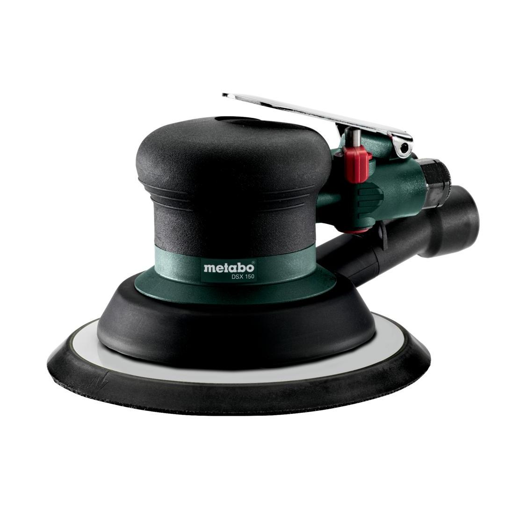

601558000

| Grinding plate Ø | 150 mm / 6 " |
| Working stroke | 5 mm / 3/16 " |
| Speed (RPM) | 12000 rpm |
| Grinding plate Ø | 150 mm / 6 " |
| Operating pressure | 6.2 bar / 90 psi |
| Air requirement | 550 l/min / 19 cfm |
| Working stroke | 5 mm / 3/16 " |
| Speed (RPM) | 12000 rpm |
| Weight | 1 kg / 2.2 lbs |
| Surface grinding | 3.85 m/s² |
| Uncertainty of measurement K | 0.87 m/s² |
| Sound pressure level | 87 dB(A) |
| Sound power level (LwA) | 98 dB(A) |
| Uncertainty of measurement K | 3 dB(A) |
| EURO Plug-in nipple 1/4" |
| ARO/Orion Plug-in nipple 1/4" |
| ISO Plug-in nipple 1/4" |
| Open-jawed spanner |
| Hexagonal wrench |
| Oil bottles |